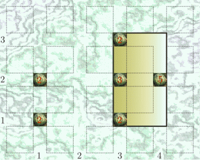

|
|||||||||||||||||
|
Server time: 2006-01-10 05:48:26 |
SPOJ Problem Set274. Johnny and the Watermelon PlantationProblem code: WMELON
Shortly after his abdication from the Bytelandian throne Johnny decided to go into farming. Water melons were a natural choice as his first crop ever, since they seemed easy enough to grow and look after. So, he sold all his beer bottles and for the money he purchased a 1km x 1km square field. Here it was that he planted the water melon seeds. (The word 'planted' is really a bit of a euphemism for walking across a field gorging on a water melon and spitting out the pips but, for the sake of politeness, let us leave it this way). To everyone's surprise a lot of the seeds sprouted stems, and soon enough many of the plants showed signs of fruit (and some had even more than one!). Then quite unexpectedly, when the water melons were still a little too unripe to eat, winter set in. Johnny knows that he has to construct a green house to protect the field but, with his rather limited budget, he cannot afford the glass to cover the whole area. He has decided that it is enough that k fruit survive the ordeal under a glazed roof. For reasons of architectural planning in Byteland it is necessary that the green house be a rectangle with sides parallel to the edges of the plot. You have been requested to help Johnny minimise investement costs. Since glass is paid for by the square meter, design a green house with the smallest possible area fulfilling the imposed conditions. InputThe first line of input contains the integer t<=100, the number of test cases. t test cases follow. Every test case begins with a line containing two integers n k, denoting the total number of plants and the number of water melon fruit to be protected, respectively (1<=n<=1000, 1<=k<=106, k doesn't exceed the total number of fruit in the plantation). Each of the next n lines describes a single plant, the i-th line containing three integers xi yi fi - the X and Y coordinates of the plant, and the number of water melon fruit on it, respectively (1<=xi, yi, fi<=1000). OutputFor each test case output a single integer, denoting the area of the smallest possible rectangular glass house with horizontal and vertical edges, sufficient to cover at least k fruit of the plantation. ExampleInput: 1 6 11 1 1 2 1 2 2 3 1 2 3 2 3 4 2 5 3 3 2 Output: 2 
|
||||||||||||||||
| |||||||||||||||||